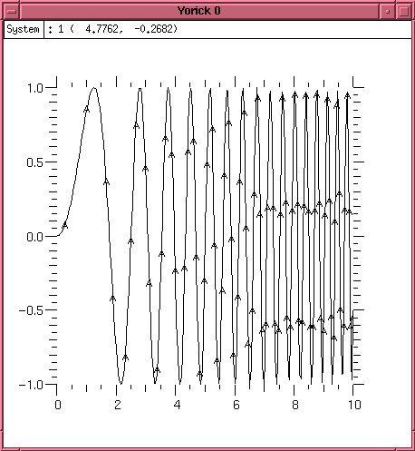
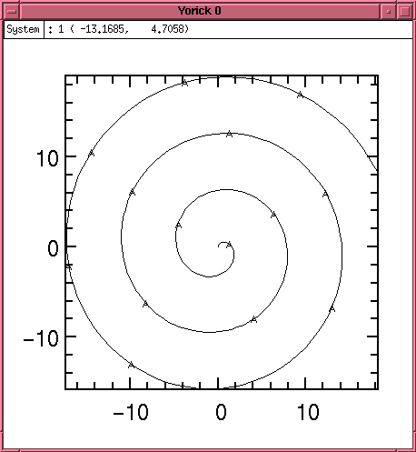
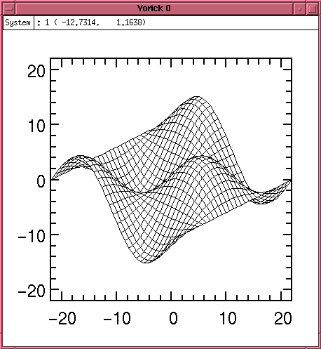
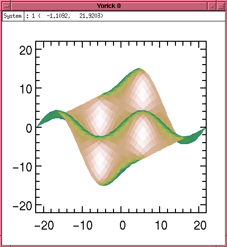

![[ TABLE OF CONTENTS ]](../gx/indexnew.gif)
![[ FRONT PAGE ]](../gx/homenew.gif)


Linux leverages a vast amount of academic software, either easy ports of existing Unix packages or, increasingly in recent years, software that is already ready to run under Linux. One example is Yorick, and this article is an attempt to provide a brief overview of the nature and capabilities of this system.
Yorick is not just another calculator -- readable syntax, array notation, and powerful IO and graphics capabilities make Yorick a favorite tool for scientific numerical analysis. Machine-independent IO, using the standard NetCDF file formats, simplifies moving applications between hardware architectures.
Yorick is an interpreted language for numerical analysis, developed at Livermore Labs by David H. Munro. Implemented in C, it is freely distributed under a liberal copyright. Yorick runs on a vast range of machines, from 486SX Linux Laptops (in my case) to Cray YMP supercomputers.
Who uses Yorick? The majority of users are physicists, many with access to the most powerful computers in the world. Specific applications include Astrophysics, Astronomy, Neurosciences, Medical Image Processing and Fusion Research.
In this article I will discuss the basics of running Yorick, describe the key array operations, and briefly discuss array operations, programming, and graphics. I hope that this quick look is enough to get the more mathematically inclined of you to give Yorick a try.
When invoked without arguments, Yorick presents a typical command line interface. Expressions are evaluated immediately, and the result is displayed. Primitive types include integers, floating point values, and strings, and all the built-in functions and constants you would expect are present.
Variable names are unadorned -- no leading $, and need not be pre-declared, and C style comments are supported.
One might not expect an interpreted language to be suitable for numerical analysis -- and indeed this would be the case if arrays were not built into the language. Arrays are first-class objects that can be operated on with a single operation. Since the virtual machine understands arrays, it can apply optimized compiled subroutines to array operations eliminating the speed penalty of the interpreter.
Arrays can be created explicitly:
> a1 = [1.1, 1.2, 1.3, 1.4, 1,5]And elements can be accessed singly or as a subset, with 1 being the origin. Parenthesis indicate the indexing operation, and a single index or a range of indexes can be specified.
> a1 [1.1,1.2,1.3,1.4,1,5] > a1(2) 1.2 > a1(1:3) [1.1,1.2,1.3]Since array operations are built into the language, functions applied to the array are automatically applied to all elements at once.
> sqrt(a1) [1.04881,1.09545,1.14018,1.18322,1,2.23607]Arrays are not limited in dimension. The rank (number of indices) of an array is not limited to one (a vector) or two (a matrix), but can be as large as desired. Arrays of rank 3 can be used to represent the distribution of a parameter across a volume, and an array of rank 4 could model this over time.
Yorick also provides a simple but effective help system. Executing the help command describes the help system. Executing it with a command name as an argument provides information on that command.
Yorick provides a complete programming language that closely matches C in terms of control flow, expressions, and variable usage. For example,
> for(i=1; i<10; i++) { print,1<<i; }
print the powers of two just as you would expect, and function
declarations, introduced with func, work as expected.
> func csc(x) {
> return 1/sin(x);
> }
There are differences -- variables need not be declared, and arrays
are much more powerful than C. The major difference is in function
invocation. Passing arguments to a function in parenthesis causes an
evaluation and printing of the result, however passing arguments
separated by commas simply executes the function and does not return
the result. Since in most cases intermediate results are not
required, many scripts contain function calls of the form f,x,y rather
than the more familiar f(x,y).
Having a programming language close to C allows easy migration between Yorick for prototyping and C for final implementation. However, as several Yorick users have indicated, moving to C was often unnecessary -- the Yorick program proved to be fast enough to get the job done, and with a minimum of programming effort.
If C extensions are required, a straightforward framework allows extending the Yorick command language with whatever new operations are necessary.
Now things get really interesting. Yorick has a compact and sophisticated mechanism for describing array indexing and operations, which are used to precisely specify the desired operation to the interpreter.
As you recall, applying an operation to an array causes the operation to be applied to each element of the array. For example
a = [1,2,3,4,5] sqrt(a) [1,1.41421,1.73205,2,2.23607]
But what about multiplying two vectors? The default is to perform an element by element by multiplication.
b = [2,4,6,8,10] a*b [2,8,18,32,50]
But those of you that remember physics or linear algebra will recall the inner and outer products. The inner product is defined as the sum of the pairwise products:
a(+)*b(+) 110And the outer product creates a matrix out of each possible multiplication
a(-,)*b(,-) [[2,4,6,8,10], [4,8,12,16,20], [6,12,18,24,30], [8,16,24,32,40], [10,20,30,40,50]]
The + and - symbols used where an index would be are called special-subscripts, and provide precise control over how array operations are executed.
The + is the matrix multiplication pseudo-index, which indicates to Yorick along which dimension the addition part of a matrix multiply should be performed.
The - is a pseudo-index, creating an index where one did not exist before.
The operators sum, min, max, and avg can be used in place of indexes.
a(max) 5 b(avg) 6
One might wonder why this is necessary, when the equivalent functional operators (i.e. min() or avg()) exist? The reason is that for matrices of rank more than one, the rank-reducing index operators allow you to specify exactly how to perform the operation. For example, given a 3x3 array, to you want to average across rows, columns, or the entire array?
c = [[1,2,3],[4,5,6],[7,8,9]] dimsof(c) [2,3,3] avg(c) 5 c(avg,avg) 5 c(avg,) [2,5,8] c(,avg) [4,5,6]
Here we have also introduced the dimsof() operator, which reports the dimensions of the argument. In this case the result tells us that c is an array of rank 2, with 3 elements in each direction.
Under Linux, Yorick is linked with the GIST graphics subsystem, allowing immediate display of plots and diagrams. Plots are interactive, allowing the user to zoom in and out, stretch axes, and crop the displays using the mouse. Yorick is capable of displaying sequences of plots over time as a move, and because of this the command to prepare for a new image is fma, or frame advance. Onward.
To plot the value of a function at evenly spaced points we need to first create the x values.
x = span(0,10,256) dimsof(x) [1,256]
X is now a 256 element long array with values that range from 0 to 10.
The plg function, given vectors for the x and y values, plots x-y graphs.
plg, sin(x^2), x
The result is shown in Plot 1. Note that the arguments are supplied y,x (not x,y). This allows Yorick to supply a default x vector (ranging from 1 to the number of y points) if desired.
Parametric plots are also supported. Consider the following code which produces the spiral in Plot 2:
window, style="vgbox.gs" a = span(0,20,256) x = a * sin(a) y = a * cos(a) plg, y, x
Surface plots are also available, either as a wire frame as in Plot 3.
#include "plwf.i" orient3 x = span(-pi,pi,32)(,-:1:32) y = transpose(x) fma plwf, sin(x)*cos(y)
Or a shaded surface rendition as in Plot 4:
fma plwf, sin(x)*cos(y), shade=1, edges=0
A host of advanced graphics options are used in the demonstration programs distributed with Yorick, and the latest copy of the documentation has an extensive description of graphics options. In addition, libraries to read, write, and display PNM format images is provided.
Yorick is an exceptionally rich environment for numerical analysis. Many capabilities such as file IO, debugging, animation, and distributed operation using MPY have been omitted. If you are at all interested please take the time to read through the documentation and the example programs. You will not be disappointed.
Yorick Home Page:
ftp://ftp-icf.llnl.gov/pub/Yorick/yorick-ad.html
Yorick Archive Sites:
ftp://sunsite.unc.edu/pub/Linux/apps/math/matrix/yorick-1.4.src.tar.gz
Linux Software for Scientists (and Curious Layfolk):
http://www-ocean.tamu.edu/~baum/linuxlist.html
Scientific Applications under Linux:
http://SAL.KachineTech.COM/